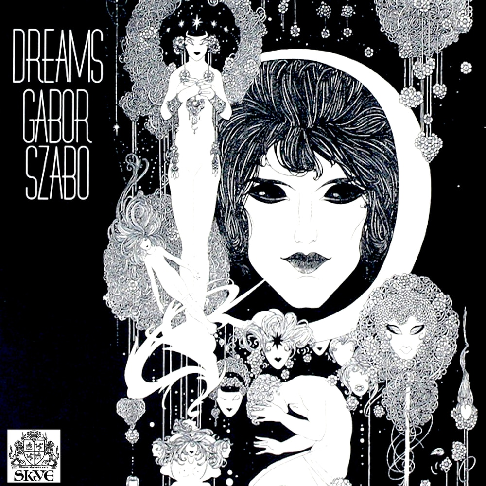
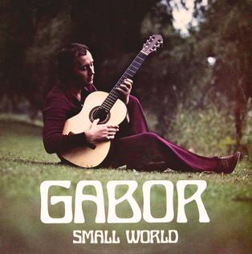
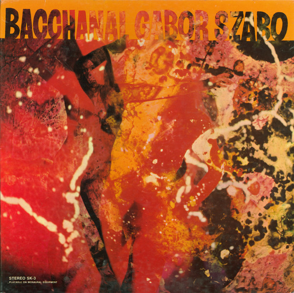

Gábor Szabó - Dreams
Dreams is an album by Hungarian guitarist Gábor Szabó featuring performances recorded in 1968
and released on the Skye label. The design was
made by David Stahlberg, and features artwork by English illustrator John Austen entitled "Vision".
"Galatea's Guitar" – 5:33
"Half the Day is the Night" (Gary McFarland) – 4:23
"Song of Injured Love" (Manuel de Falla) – 4:05
"The Fortune Teller" (Gábor Szabó, Louis Kabok) – 4:28
"Fire Dance" (Falla) – 5:39
"The Lady in the Moon" – 5:13
"Ferris Wheel" (Donovan Leitch) – 5:27

Gábor Szabó - Small world
Small World is an album by Hungarian guitarist Gábor Szabó featuring
performances recorded in Stockholm in 1972 and released on the Swedish Four Leaf Clover label.
"People/My Kind of People" (Jule Styne, Bob Merrill/Gábor Szabó) - 8:48
"Lilac-Glen" (Alicia Solari, Gábor Szabó, Peter Totth) - 5:36
"Mizrab" - 9:09
"Impression of My Country/Foothill Patrol" - 12:04
"Another Dream" (Totth) - 4:59
"Concierto de Aranjuez" (Joaquín Rodrigo) - 4:34

Gábor Szabó - Bacchanal
Bacchanal is a 1968 album by Gábor Szabó, released on the label he founded
with Cal Tjader and Gary McFarland, Skye Records
"Three King Fishers" (Donovan) - 4: 48
"Love is Blue" (André Popp, Bryan Blackburn, Pierre Cour) - 4:17
"Theme from Valley of the Dolls" (André Previn) - 3:48
"Bacchanal" (Gábor Szabó) - 4:55
"Sunshine Superman" (Donovan) - 3:45
"Some Velvet Morning" (Lee Hazlewood) - 5:10
"The Look of Love" (Burt Bacharach) - 3:15
"The Divided City" (Gábor Szabó) - 3:20